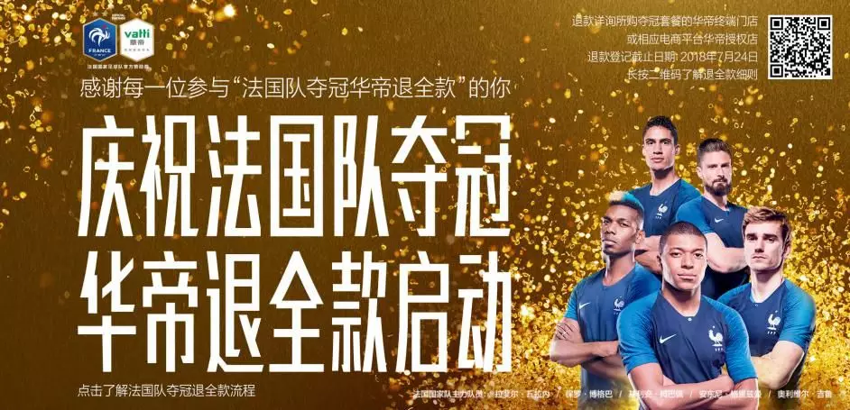
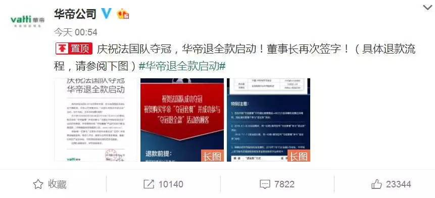
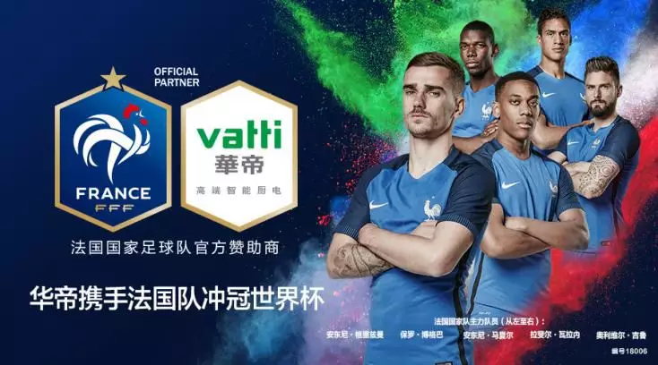
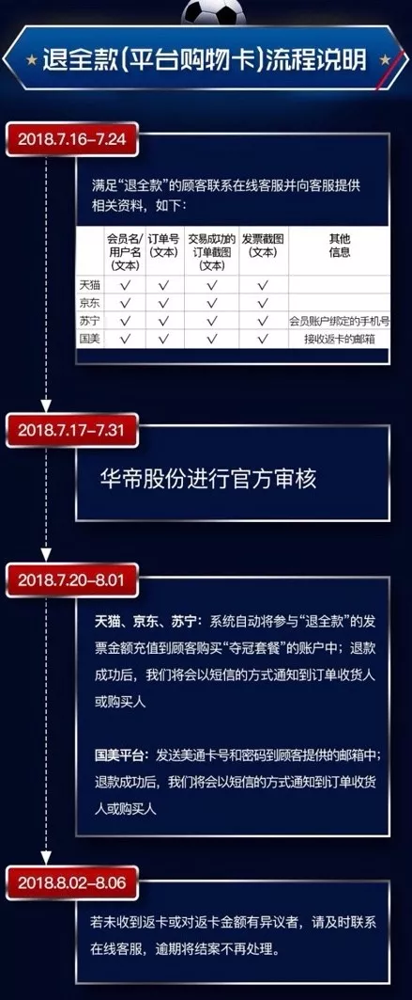

案例发生了什么
谁参与华帝
发生节点 / 场景2018 俄罗斯世界杯；中国；法国国家队官方赞助商
传播形式赛果承诺型；交易转化型；实时履约型
传播核心把法国队夺冠这一不确定赛果写进指定“夺冠套餐”的交易承诺：如果法国队夺冠，华帝退全款。




把法国队夺冠这一不确定赛果写进指定“夺冠套餐”的交易承诺：如果法国队夺冠，华帝退全款。
3 月宣布合作法国国家队；5 月底公布活动；6 月 1 日至 7 月 3 日销售指定夺冠套餐；赛事进程持续放大讨论；7 月 16 日法国队夺冠后官方微博启动退款；随后以退款进度和履约结果完成第二轮传播。
MARKETING KNOWLEDGE ROUTER · 营销知识路由器
营销启发卡
把历届经典的记忆点、商业结构和迁移方法放在同一层阅读。 卡片底部按主题连接全站相关案例、经典方法与深度文章。
01核心动作
华帝退全款”八个字就是完整机制
强队冲冠的悬念、消费者“买了也可能免费”的期待，以及品牌敢于押注并兑现的围观感；“法国队夺冠，华帝退全款”八个字就是完整机制，既是广告语也是消费者条款。
02传播与商业机制
华帝没有只把国家队身份做成海报
华帝没有只把国家队身份做成海报，而是把厨电套餐、渠道销售和赛果承诺绑定，让赞助权益直接进入购买决策；3 月宣布合作法国国家队；5 月底公布活动；6 月 1 日至 7 月 3 日销售指定夺冠套餐；赛事进程持续放大讨论；7 月 16 日法国队夺冠后官方微博启动退款；随后以退款进度和履约结果完成第二轮传播。
03可复用的方法
高效赛果营销必须同时具备可一句话复述的触发条件、明确商品范围、可承受…
高效赛果营销必须同时具备可一句话复述的触发条件、明确商品范围、可承受的履约预算、赛后即时兑现和公开进度。2018 的真正资产不是押中冠军，而是把承诺写进交易并完成大规模履约。
适用条件、风险与证据
- “退全款”涉及线上礼品卡与线下现金等不同执行口径，曾引发投诉和法律争议。任何复制都必须提前统一广告用语、渠道规则、凭证要求、退款形式和履约时限，并准备极端赛果下的现金流。
- 后续复盘还应补齐发布主体、时间线、真实执行图、媒介范围和结果口径；没有这些证据时，不把行业评价或赛事总热度写成品牌增量。
资料与来源
官方资料与原始来源
市场 / 权益
中国
法国国家队官方赞助商
创意打法
赛果承诺型；交易转化型；实时履约型
- 投资回报Festival · 2019法国队夺冠，华帝退全款（2019 金奖案例）
- 中新经纬 · 2018-07-16华帝“法国队夺冠退全款”真的是稳赚不赔的生意？
- 中国消费者协会 / 人民网 · 2018-08-01中消协：华帝退款工作基本完成
- 法制日报 / 人民网 · 2018-07-23华帝“夺冠退全款”营销活动引发争议
来源按品牌/官方发布、官方账号留存、权威媒体、获奖案例库分层记录；品牌与奖项自报结果不视作独立审计。